DoNote
Simple Note System.SID
STARTERGATE IDENTITY
HIVE
HIVE is actual movie hive.Related Repos

Cloudy
The Lightest Cloud Drive System for Personal UseRelated Repos
The Intersection
GameLauncher is Game LauncherSTARTERGATE.CDN
CDN Server for Do Products and SID ProfileRelated Repos
HakCam
HakCam is Hak-kyo Cam-BangRelated Repos
Problert
Problert, Make your complaints fastRelated Repos
MovieBot
MovieBot is Movie BotRelated Repos
Nearby
GSM 1학년 웹 프로젝트Related Repos
BKNG
Point Stacking System for AcademyRelated Repos